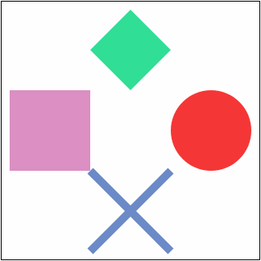

En la imaginaria república de Libertonia el presidente Firefly ha creado una nueva moneda, el rufus, de la que se emiten cinco tipos de billetes: de 360, 60, 12, 3 y 1 rufu.
Escriba un programa que calcule el número mínimo de billetes necesarios para pagar una cantidad de rufus.
PAGANDO EN RUFUS
¿Cuántos Rufus quiere pagar? 0
Por favor, escriba una cantidad positiva.
PAGANDO EN RUFUS
¿Cuántos Rufus quiere pagar? 500
Para pagar 500 rufus, puede utilizar:
1 billete de 360 rufus
2 billetes de 60 rufus
1 billete de 12 rufus
2 billetes de 3 rufus
2 billetes de 1 rufu
PAGANDO EN RUFUS
¿Cuántos Rufus quiere pagar? 25
Para pagar 25 rufus, puede utilizar:
2 billetes de 12 rufus
1 billete de 1 rufu
PAGANDO EN RUFUS
¿Cuántos Rufus quiere pagar? 1
Para pagar 1 rufu, puede utilizar:
1 billete de 1 rufu
PAGANDO EN RUFUS
¿Cuántos Rufus quiere pagar? 2519
Para pagar 2519 rufus, puede utilizar:
6 billetes de 360 rufus
5 billetes de 60 rufus
4 billetes de 12 rufus
3 billetes de 3 rufus
2 billetes de 1 rufu
Escriba un programa que indique si una torre o el rey del ajedrez puede moverse entre dos posiciones del tablero en un sólo movimiento.
El usuario escribe las dos posiciones dando el número de fila y columna de cada posición (entre 1 y 8) y el programa contesta si un rey o una torre puede moverse entre esas dos casillas en un solo movimiento.
Nota: Si a una posición pueden llegar el rey y la torre, bastará con indicar una de las piezas.
MOVIMIENTO DE AJEDREZ Indique la posición inicial de la pieza: Indique la columna inicial (de 1 a 8): 10 Indique la fila inicial (de 1 a 8): 5 Esa posición está fuera del tablero.
MOVIMIENTO DE AJEDREZ Indique la posición inicial de la pieza: Indique la columna inicial (de 1 a 8): 4 Indique la fila inicial (de 1 a 8): 3 Indique la posición final de la pieza: Indique la columna final (de 1 a 8): 6 Indique la fila final (de 1 a 8): -1 Esa posición está fuera del tablero.
MOVIMIENTO DE AJEDREZ Indique la posición inicial de la pieza: Indique la columna inicial (de 1 a 8): 4 Indique la fila inicial (de 1 a 8): 6 Indique la posición final de la pieza: Indique la columna final (de 1 a 8): 4 Indique la fila final (de 1 a 8): 6 Las posiciones inicial y final deben ser distintas.
MOVIMIENTO DE AJEDREZ Indique la posición inicial de la pieza: Indique la columna inicial (de 1 a 8): 4 Indique la fila inicial (de 1 a 8): 1 Indique la posición final de la pieza: Indique la columna final (de 1 a 8): 4 Indique la fila final (de 1 a 8): 8 Una torre se puede mover de (4, 1) a (4, 8).
MOVIMIENTO DE AJEDREZ Indique la posición inicial de la pieza: Indique la columna inicial (de 1 a 8): 5 Indique la fila inicial (de 1 a 8): 6 Indique la posición final de la pieza: Indique la columna final (de 1 a 8): 6 Indique la fila final (de 1 a 8): 7 El rey se puede mover de (5, 6) a (6, 7).
MOVIMIENTO DE AJEDREZ Indique la posición inicial de la pieza: Indique la columna inicial (de 1 a 8): 1 Indique la fila inicial (de 1 a 8): 1 Indique la posición final de la pieza: Indique la columna final (de 1 a 8): 3 Indique la fila final (de 1 a 8): 3 Ni una torre ni el rey se pueden mover de (1, 1) a (3, 3).
Marcus Cubitus y Julius Humerus son dos legionarios romanos que no dejan de probar nuevos juegos de dados en los exámenes.
En el juego de hoy, los dos jugadores tiran en orden un mismo número de dados que se decide al principio de la partida. Los jugadores van acumulando los puntos obtenidos en cada tirada, pero si la suma es múltiplo de 10, pierden los puntos acumulados hasta entonces. Gana el jugador que obtenga más puntos.
Escriba un programa que simule este juego de dados para dos jugadores.
JUEGO DE DADOS
¿Cuántos dados van a tirar Cubitus y Humerus? 0
Por favor, escriba una cantidad positiva.
JUEGO DE DADOS
¿Cuántos dados van a tirar Cubitus y Humerus? 10
Tirada de Cubitus: 2 2 2 4 ¡CERO! 4 5 4 1 5 3
Cubitus ha obtenido 22 puntos.
Tirada de Humerus: 6 4 ¡CERO! 5 3 3 6 2 1 ¡CERO! 5 6
Humerus ha obtenido 11 puntos.
Ha ganado Cubitus 22 a 11.
JUEGO DE DADOS
¿Cuántos dados van a tirar Cubitus y Humerus? 7
Tirada de Cubitus: 6 2 4 4 5 6 3 ¡CERO!
Cubitus ha obtenido 0 puntos.
Tirada de Humerus: 5 4 5 1 6 1 4
Humerus ha obtenido 26 puntos.
Ha ganado Humerus 26 a 0.
JUEGO DE DADOS
¿Cuántos dados van a tirar Cubitus y Humerus? 5
Tirada de Cubitus: 1 4 6 4 6
Cubitus ha obtenido 21 puntos.
Tirada de Humerus: 5 4 4 3 3
Humerus ha obtenido 19 puntos.
Ha ganado Cubitus 21 a 19.
JUEGO DE DADOS ¿Cuántos dados van a tirar Cubitus y Humerus? 10 Tirada de Cubitus: 6 1 2 4 4 3 ¡CERO! 2 1 1 4 Cubitus ha obtenido 8 puntos. Tirada de Humerus: 5 5 ¡CERO! 6 1 3 ¡CERO! 5 3 2 ¡CERO! 5 3 Humerus ha obtenido 8 puntos. Han empatado a 8.
Escriba un programa que simule un solitario de dados que consiste en tirar cada vez más dados en cada ronda mientras no se obtengan menos puntos que en la ronda anterior.
SOLITARIO DE DADOS En cada ronda se tira un dado más. La partida continúa si no se obtienen menos puntos que en la ronda anterior. Pulse Intro para tirar de nuevo. Dados: 1 => 1 Dados: 6 4 => 10 Dados: 6 1 5 => 12 Dados: 1 3 2 5 => 11 Se ha terminado la partida.
SOLITARIO DE DADOS En cada ronda se tira un dado más. La partida continúa si no se obtienen menos puntos que en la ronda anterior. Pulse Intro para tirar de nuevo. Dados: 4 => 4 Dados: 1 3 => 4 Dados: 1 1 1 => 3 Se ha terminado la partida.
En cada ronda se tira un dado más. La partida continúa si no se obtienen menos puntos que en la ronda anterior. Pulse Intro para tirar de nuevo. Dados: 3 => 3 Dados: 2 2 => 4 Dados: 1 4 5 => 10 Dados: 1 4 2 6 => 13 Dados: 3 4 1 3 4 => 15 Dados: 3 3 2 1 3 3 => 15 Dados: 6 2 3 5 1 4 5 => 26 Dados: 4 4 6 3 5 3 5 3 => 33 Dados: 4 4 4 4 2 3 5 2 3 => 31 Se ha terminado la partida.
Escriba dos programas que generen las siguientes imágenes a partir de las plantillas siguientes:

<!DOCTYPE html>
<html lang="es">
<head>
<meta charset="utf-8">
<title>Ejercicio 5-1. SVG. Examen. Python</title>
<meta name="viewport" content="width=device-width, initial-scale=1.0">
</head>
<body>
<svg
width="320" height="320" viewBox="-160 -160 320 320"
style="border: black 1px solid">
</svg>
</body>
</html>
Los colores empleados en esta imagen son: hwb(320 56% 14%) , hwb(360 21% 4%) , hwb(220 42% 22%) , hwb(155 19% 13%)
<!DOCTYPE html>
<html lang="es">
<head>
<meta charset="utf-8">
<title>Ejercicio 5-2. SVG. Examen. Python</title>
<meta name="viewport" content="width=device-width, initial-scale=1.0">
</head>
<body>
<svg
width="340" height="340" viewBox="-10 -10 340 340"
style="border: black 1px solid">
</svg>
</body>
</html>
Los colores empleados en esta imagen son: DodgerBlue , LightGreen , MediumSeaGreen , RebeccaPurple , Red , SaddleBrown , Tomato , Yellow